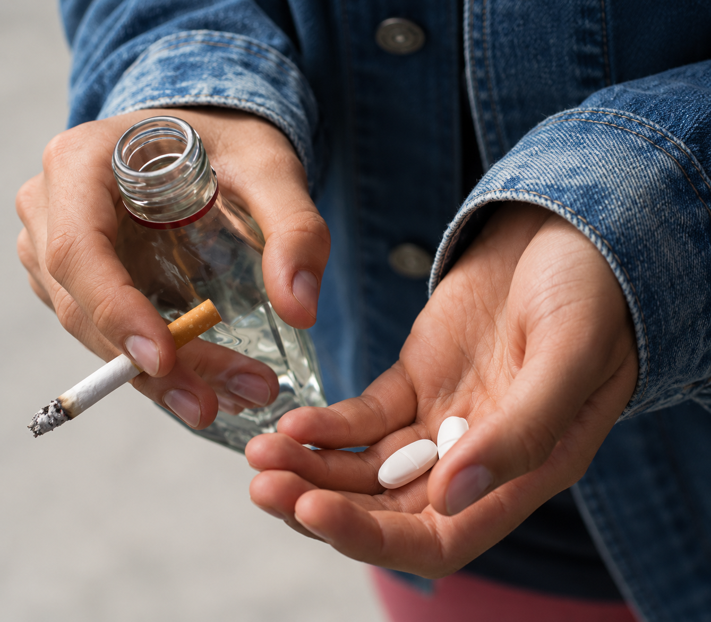
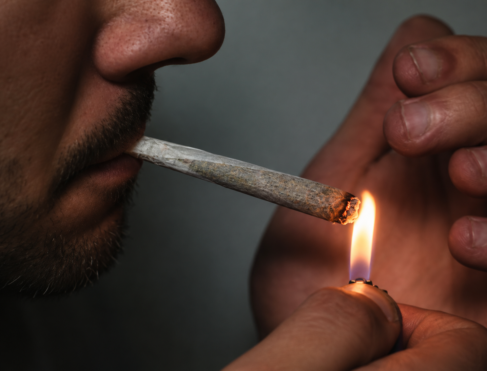
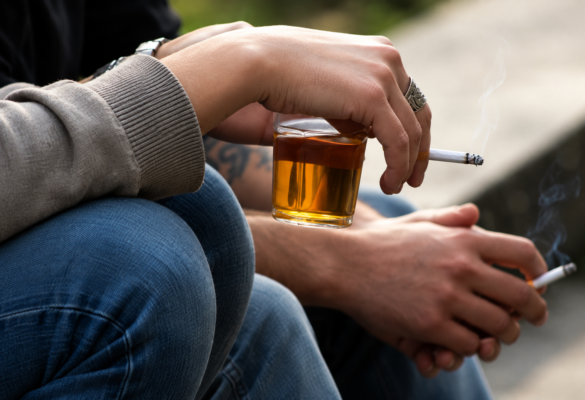
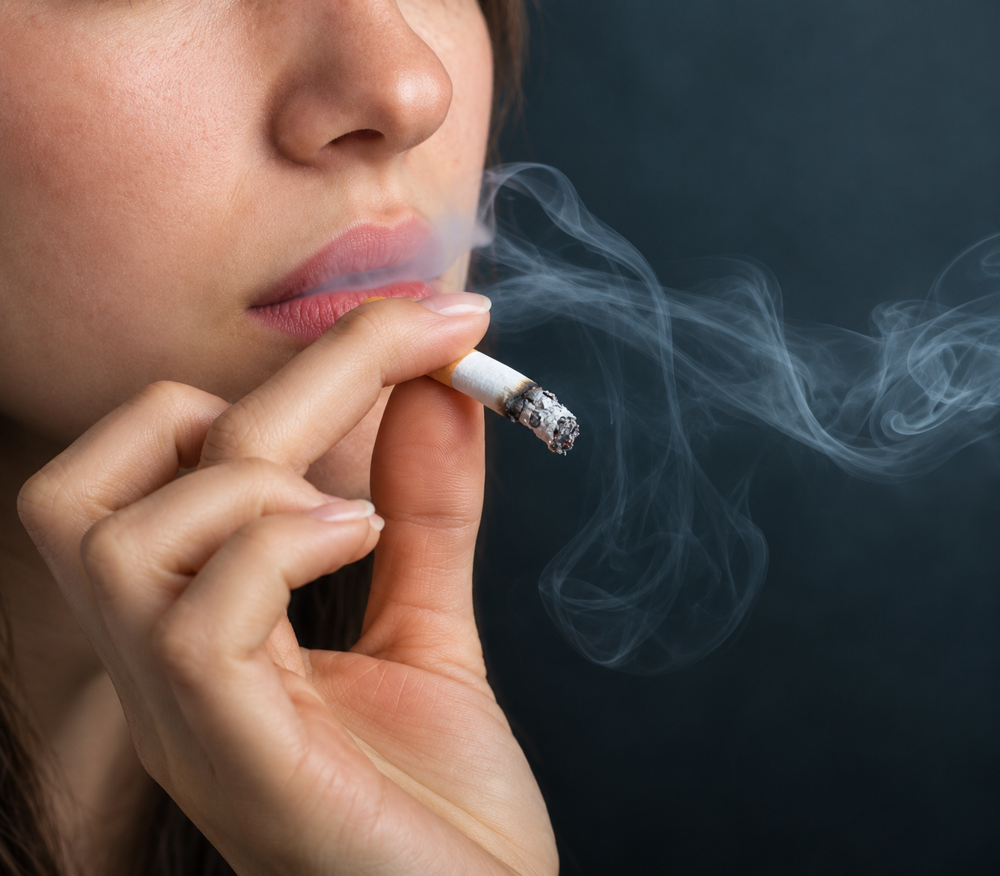

"Com 14 anos comecei na dependência. Não tinha consciência de certas coisas que aconteciam e, quando observei os danos que estava fazendo em minha vida e na vida da minha família, já estava totalmente fora da realidade. Fiquei internado por um tempo e depois busquei a recuperação na irmandade de Narcóticos Anônimos, onde dei seguimento ao meu processo de recuperação, aos 25 anos de idade. Nessa época, era um professor recém-formado e estava sem nenhum rumo em minha vida." - Alice, 29 anos.


"Comecei a usar drogas muito cedo para fazer parte daquela turma 'mais descolada'. O que era uma brincadeira se tornou um hábito semanal, diário. Rapidamente a perda de controle se instalou. Tive uma boa formação familiar e isso não foi suficiente para meus valores se manterem sólidos. Junto ao uso de drogas, a deformação de caráter e personalidade ficaram latentes e eu passei a viver para usar e usar para viver, sem poupar maneiras e meios de usar drogas. Completamente falida em todas as áreas da minha vida: física, mental, emocional, espiritual, familiar e financeira, encontrei a irmandade de Narcóticos Anônimos, que me ofereceu uma nova maneira de viver livre das drogas." - Antônio, 49 anos.
"Nasci em outro país e vim para o Brasil com 8 anos junto com meus pais. Aqui comecei a estudar e tentar me adaptar a uma nova realidade. Logo após a adolescência começou o meu uso de drogas, resultado, entre outras coisas, da minha falta de aceitação. O uso de drogas prolongou-se por 10 anos, causando descontrole físico, mental e emocional. Em 2012 fui internado em uma comunidade terapêutica e lá conheci o programa de Narcóticos Anônimos. Após sair da comunidade, acreditei que ainda poderia usar álcool, crença esta que me fez voltar a usar drogas ilícitas." - Alisson, 28 anos.


" Iniciei o uso de drogas por diversão, ou pelo menos é o que eu pensava na época. Conforme o tempo foi passando, percebi que eu já não parava mais quando eu queria. Comecei a fazer coisas que eu jamais imaginei que faria. Prejudiquei a mim mesma e a outras pessoas. Só pedi ajuda quando não tive mais saída, quando minha mãe, chorando, disse que não sabia mais o que fazer. Naquele dia, ela tinha percebido que saquei dinheiro da sua conta, então eu admiti que perdi o controle total da minha vida Encontrei o meu lugar no mundo, não me sentia mais sozinha. Percebi que a recuperação era possível e continuo voltando para manter aquilo que tenho: uma vida limpa, sem drogas. Só procurei ajuda quando a dor de não mudar foi maior do que a dor da mudança. Para me manter limpa, preciso fazer uma manutenção regular da minha recuperação." - Serena, 35 anos.